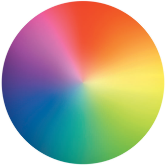
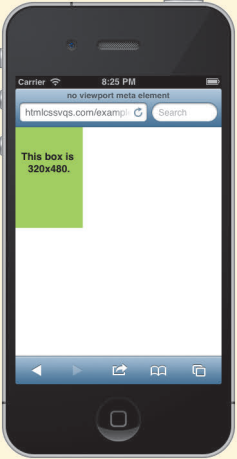
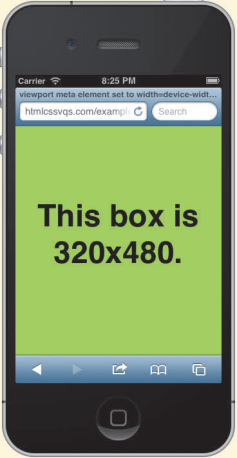
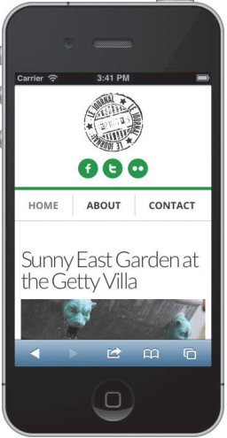
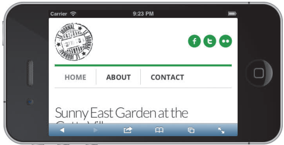

我们可以使用响应式Web设计的方法，让同一个网站在不同的设备上显示不同的效果，这样可以满足用户需求，方便我们维护网站，方法基于如下：
1.灵活的图像和媒体：图像和媒体资源的尺寸是用百分数定义的，从而可以根据环境进行缩放
2.灵活的、基于网格的布局：也就是流式布局，对于响应式网站，所有的width属性都用百分数设定，因此所有的布局成分都是相对的，其他水平属性通常也会使用相对单位（em、百分
数和 rem 等）。
3.媒体查询：使用这项技术，可以根据媒体特征（如浏览器可视页面区域的宽度）对设计进行调整。
使用图像使用可伸缩图像技术，就可以让图像在可用空间内缩放，但不会超过其本来的宽度
步骤：1.对任何想做成可伸缩图像的图像，在HTML的img标签中省略width和height属性，2.在样式表中，为每个想做成可伸缩图像的图像应用 max-width: 100%;
图像缩放的可用空间是由其父元素建立的内容区域，如果父元素有水平方向上的内边距，可用空间就会相应减小
一定要使用 max-width: 100% 而不是width: 100%，它们都能让图像在容器内缩放，不过， width: 100% 会让图像尽可能地填充容器，如果容器的宽度比图像宽，图像就会放大到超过其本来尺寸，有可能会显得较为难看
可以使用background-size;属性对背景图像进行缩放
还可以使用video, embed, object { max-width: 100%; } 让HTML5视频及其他他媒体变成可伸缩的（同样也不要在HTML中为它们指定width和height）

拥有定宽容器的网页显得有些死板，如果桌面浏览器的宽度小于页面宽度，就会出现横向滚动条，我们希望页面能进行缩放，并正好适应浏览器视觉区域大小，就像可伸缩图像一样，流式布局（又称弹性布局）便可以做到这一点
创建弹性布局需要使用百分数宽度，并将它们应用于页面里的主要区域，元素的百分数宽度基于其父元素（即包含该元素的容器）提供的可用空间
要指定的宽度（以像素为单位）／容器宽度（以像素为单位）＝值
步骤：对于需要某个宽度实现预期布局的元素，设置width: percentage;，其中percentage表示你希望元素在水平方向上占据容器空间的比例
作为可选的一步，对包含整个页面内容的元素设置 max-width: value;，其中value表示你希望页面最多可增长到的最大宽度，通常，value以像素为单位，不过也可以使用百分数、em值或其他单位的值
如果父元素有水平方向上的内边距，它为子元素建立的容器就会变小
还可以对元素设置基于百分数的margin 和 padding 值，内边距和外边距的 em 值是相对于元素的font-size 的，而基于百分数的值则是相对于包含元素的容器的
对于设置了body { font-size:100%; }的页面，对font-size、margin、padding和max-width使用em值还有一个好处就是如果用户更改了浏览器默认字体大小，那么页面也会跟着变大或变小
在8.6节学习过于可以使用两种方式针对特定的媒体类型定位 CSS，一种是：在link或style元素的开始标签中添加media="output"，其中output可以是print、screen或all，和其他，第二种是：在样式表中使用@media规则，比如：@media print { p { color:red; } }
媒体查询增强了媒体类型方法，允许根据特定的设备特性定位样式要调整网站的呈现样式，让其适应不同的屏幕尺寸，采用媒体查询特别方便，可以包含在媒体查询里的媒体特性有:
width（宽度）、height（高度）、device-width（设备宽度）、device-height（设备高度）、orientation（方向）、aspect-ratio（高宽比）、device-aspect-ratio（设备高宽比）、color（颜色）、color-index（颜色数）、monochrome（单色）、resolution（分辨率）、scan（扫描）、grid（栅格）
还有一些非标准的媒体特性，如-webkit-device-pixel-ratio（WebKit设备像素比）、-moz-device-pixel-ratio（Mozilla设备像素比）
WebKit是Chrome、 Safari 等浏览器使用的网页引擎和 JavaScript 引擎开源程序，Mozilla是Firefox 等浏览器的基础程序
除了orientation、 scan和grid以外，上述属性均可添加min-和max-前缀，min-前缀定位的是"大于等于"对应值的目标，而max-前缀定位的则是"小于等于"对应值的目标
媒体查询的步骤：
指向外部样式表的链接：<link rel="stylesheet" media="logic type and (feature:value)" href="your-stylesheet.css">
位于样式表中的媒体查询：@media logic type and (feature:value) { 样式 }
logic（逻辑）部分是可选的，其值可以是only或not，only关键字可以确保旧的浏览器不读取余下的媒体查询，同时一并忽略链接的样式表，not关键字可以对媒体查询的结果求反，让其反面为真，例如，使用media="not screen"会在媒体类型为screen以外的任何类型时加载样式表
type（类型）部分是媒体类型，如screen(用于显示屏)、 print(用于打印机)、 all(用于所有的媒体设备)、 aural(用于语音和音频合成器)、 braille(用于盲人用点字法触觉回馈设备)、 handheld(用于小的手持的设备)、 projection(用于方案展示，比如幻灯片)、 tty(用于使用固定密度字母栅格的媒体，比如电传打字机和终端)、 tv(用于电视机类型的设备)
feature: value 对是可选的，但一旦包含它们，它们必须用括号包围且前面要有and这个字，feature是预定义的媒体特性，如min-width、max-width或者resolution；对color、 color-index和monochrome特性来说，value 是可选的
比如：<link rel="stylesheet" media="only screen and (min-width:480px)" href="styles-480.css">和@media only screen and (min-width:480px) { 样式 }都表示为：仅当媒体类型为screen且视觉区域最小宽度为480像素时，使用样式规则
可以使用 and 将多个特性和值的组合串接起来，还可以创建一系列媒体查询（使用逗号分隔每个媒体查询），在用逗号分隔的媒体查询列表中，如果有一个媒体查询为真，则整个媒体查询列表为真，比如：@media only screen and (min-width:480px) and (max-width:760px), projection and (color) { 样式 }
在媒体查询中，最好使用 em，因为媒体的触发条件往往与访问者浏览器中显示的字体大小有关
任何位于媒体查询以外的基准样式规则都会应用于所有的设备、媒体查询样式规则声明仅在与常规样式冲突时进行覆盖
视觉区域（viewport）指的是浏览器（包括桌面浏览器和移动浏览器）显示页面的区域，它不包含浏览器地址栏、按钮这样的东西，只是浏览区域，媒体查询的 width 特性对应的是
视觉区域的宽度，不过， device-width 特性不是，它指的是屏幕的宽度
在移动设备（如 iPhone）上，默认情况下这两个值通常不一样。Mobile Safari （iPhone的浏览器）的视觉区域默认为 980 像素宽，但 iPhone 的屏幕只有 320 像素宽，iPhone 会像设为 980 像素宽的桌面浏览器那样显示页面，并将页面缩小以适应 320 像素的屏幕宽度（在纵向模式下）
可以在页面的 head 部分添加视觉区域 meta 元素<meta name="viewport" content="width=device-width, initial-scale=1" />解决这个问题
这段代码的重点是 width=device-width，有了这条语句，视觉区域的宽度会被设成与设备宽度相同的值，因此在纵向模式下该宽度的页面内容会填充整个屏幕，效果如下：
代码中的 initial-scale=1，部分对 width 和 device-width 值没有影响，但通常会包含这一语句，它将页面的默认缩放级别设成了 100%，换成纵向模式也一样
如果不设置 initial-scale=1，在 iPhone 中，手机从纵向模式改为横向模式时，网页会被放大，从而让布局与纵向模式的一致，如图4是设置了initial的，没设置的话，效果是图3的放大
   
理解了可伸缩图像、弹性布局和媒体查询的知识之后，就可以将它们组合在一起，创建响应式网页
1.创建内容和HTML
2.在HTML页面的head元素中，输入<meta name="viewport" content="width=device-width" />或<meta name="viewport" content="width=device-width, initial-scale=1" />
3.创建适用于所有设备的基准样式，这同时也是旧浏览器和功能比较简单的设备显示的内容，确保页面中的图像可伸缩
4.识别出适合你的内容的断点，创建相关的媒体查询，让布局适应从小屏幕到大屏幕的不同可视区域宽度
5.如果需要为第4步中页面的一些内容指定宽度，使用百分数
6.选择你希望的旧版IE显示页面的方式
7.开始测试
8.根据需要，修改第3~5步中的CSS，并进行测试，直到页面在各种设备下都呈现出预期的效果
网站http://mediaqueri.es汇集了大量现实的响应式网站，可以借鉴
网站http://screensiz.es提供了流行设备和显示屏的分辨率和设备宽度信息